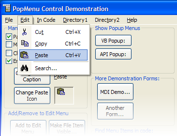

VB5 IconMenu Complete Source Code (187K)
VB5 IconMenu Complete Source Code (187K)
 VB5 IconMenu Control Binary (41K)
VB5 IconMenu Control Binary (41K)
 VB5 IconMenu Demonstration (82K)
VB5 IconMenu Demonstration (82K)
 VB6 IconMenu Complete Source (177K)
VB6 IconMenu Complete Source (177K)
 VB6 IconMenu Control Binary (41K)
VB6 IconMenu Control Binary (41K)
 VB6 IconMenu Demonstration (79K)
VB6 IconMenu Demonstration (79K)
 28 Mar 2003
28 Mar 2003
Added support for Office XP Style menus.
VB6 ImageList under XP is now supported.
Can now customise menu foreground and background colours as with the other menu controls.
 Subclassing Without The Crashes
Subclassing Without The Crashes

IconMenu Control
Convert standard VB Menus to Icon Menus for a smarter look, and build custom menu trees at runtime.
The IconMenu (cPopMenu.ocx) control is a really simple way to get icons into a VB project's menus. It also allows you to create arbitrary new submenus, gives you control over the system menu and has some useful new events indicating when menu items are highlighted and exited.
Introducing the PopMenu Control
VB is a great language and interface designer, don't get me wrong. But sometimes you get the feeling there just hasn't been enough effort put in. Two particular examples are the printer object (better than it used to be, but still not very good!) and menus.
When you first start VB5, you are presented with a wonderful interface: all the menus have icons which reflect the toolbar function, and there are neat popup right-click menus everywhere. So I naturally thought we'd get these functions to use ourselves for our own VB applications. Er... no.
Instead we get the same old menu control that's been there since whenever. You've got to predesign your menus at design time, and although you can add new levels to a existing menu, you're stuck if you want to add a new submenu.
I found that for my application I needed to create a Favorites menu. The Internet Explorer Favourites list seemed to be a good model as it allows you to organise stuff if you want to, or just add it straight in. Since you can't add a submenu to an existing menu in VB, however, you just can't do it! (Or, at least, you could but you would have to harshly restrict where things can be organised to).
Rather than give up (which maybe I should have, because for various reasons, which were unusally not code related, that application never got completed!) I decided to build a menu control which allows you to create arbitrary numbers of sub-menus at run time. At the same time I added icon support so you get Office/VB style menus for VB.
How PopMenu Works
The cPopMenu control is a VB UserControl which is invisible at runtime. When you call the initialisation method (SubClass) the control uses the Win32 API menu functions to determine what menus there are on the form and stores their IDs, captions, enabled state and so on in an internal array. At the same time it also converts them to Owner-Draw menu items, so the cPopMenu control is notified when the menu items need drawing, and can draw the menu as required. Finally, the control subclasses the form so it can react to menu items being higlighted, clicked and when a popup menu is just about to be drawn.
This means that the control draws over the existing VB menus, but still allows the old menu events to be fired in code. By exposing properties to access the internal array, the control allows icons to be associated with the existing menu items, as well as allowing you store some useful extra information against the menu items (Key, HelpText, ItemData etc).
Quick Start - Adding Icon Menu Support to an Existing Application
Adding Icon Menu support to an existing application can be very simple, depending on what VB menu features you use. If you don't use the menu Load, Unload, Caption or Visible methods, you only have to add a small amount of code. I'll cover this case now.
The steps are:
- Add a cPopMenu to your form. If you don't already have an ImageList, add one with the icons you want. You can use either a standard COMCTL32.OCX image list or a vbAccelerator Image List control/class as the Image List.
- Initialise the cPopMenu control and the icons against the menu items in the
Form_Load event as follows:
with cPopMenu1 ' Associate the image list: ' NOTE: If you are using a VB ImageList, make sure that it has at ' least one icon in it before calling this method. .ImageList = ilsIcons ' Parse through the VB designed menu and sub class the items: .SubClassMenu Me ' The Key property for a VB menu is set to the menu's name. ' In this example I set the icon for the mnuFileOpen menu item: .ItemIcon("mnuFileOpen") = ilsIcons.ListImages("OPEN").Index-1 ' Repeat for your other menus End With - And that's it! Everything else will continue to work as before. If you use the
VB Caption property, there is a minor change you must make to make sure the menu
item keeps being owner-drawn. Instead of:
mnuFile(0).Caption = "&Open Project..."Write this:cPopMenu1.Caption("mnuFile(0)") = "&Open Project..."
If you use VB's Load, Unload methods or the Visible property, however, you'll need to modify the code a bit more to use the new Add and Remove menu features.
Adding, Inserting and Deleting Menu items
You can extend existing menus, create as many new sub-menus as you want and modify items in the menu using the following methods:
- AddItem
This adds a new item to the menu. You can specify a parent item if you want to create a new submenu. - InsertItem
This works in the same way as add item, but allows you to insert an item to the menu. In combination with the - RemoveItem method this makes it much easier to work with menu items.
- RemoveItem
Removes an item from a menu. - ReplaceItem
Similar to AddItem, but instead replaces an existing menu item. This allows you to change multiple properties of the menu item at the same time. - ClearSubMenusOfItem
This clears all the menu items in a submenu. You can then use the AddItem and InsertItem methods to rebuild the list.
Note that menu items added or inserted using these methods do not raise events through the standard VB menu events. (This is because your menu might be a completely new sub-menu, which has no corresponding VB event to fire through.) Instead the ItemClick event of cPopMenu fires, passing the index of the menu in the control. You should use cPopMenu's ItemData, MenuKey and Caption properties to make it easier to identify which item has actually been clicked.
Menu items deleted using ReplaceItem or ClearSubMenusOfItem are hard-deleted from the control. If you ever subsequently want to get these items back again, you need to re-add them.
cPopMenu and the VB Menu .Visible Property
Unfortunately, VB implements menus with .Visible set to false by actually deleting the menu handle entirely from the menu. Because the cPopMenu control must use Windows API methods to work with the menu, it cannot detect VB menus that are not visible. Here is an overview of what happens with menus that have .Visible = False:
Menus set to be Invisible in the VB Menu designer
In this case, the menu is not created when you the run the VB project. When you call cPopMenu's SubClassMenu method, it will have no reference to these menu items. The worst case is when all menu items are set to be invisible in the designer - then the cPopMenu will find no menus at all and will return a completely blank menu and the .MenuCount property will return 0! If you are trying to do this, it is likely you are trying to create a pop-up menu with the submenu of one or more of the invisible items. You should consider using the Pop-up Menu ActiveX DLL instead - it is much better suited to the task.
Setting .Visible = False at run-time.
In this case, the cPopMenu control will have a reference to the menu until you set .Visible = False. When you do this, VB deletes the menu handle that cPopMenu is referring to. The control still thinks the menu is valid even though it has been removed. You can continue to set properties for the removed menu item but they will have no effect. When you set .Visible True again, VB creates a completely new menu handle for the item that the control does not know about - it still looks for the old menu handle. The new menu will not be owner-drawn and you will not be able to refer to it from the control. There is now a work-around in the control for the lack of the .Visible property support in the control, but it still can't really address all the problems. To use this method, whenever you change a menu item's .Visible property, you can call cPopMenu's CheckForNewMenuItems event. This rechecks all the menu items and:
- Removes items that have been made invisible in VB.
- For each menu item which was previously invisible but has subsequently been made visible, it fires a RequestNewMenuItem event. You must fill in the Icon, Tag, Itemdata and other properties each time, because the cPopMenu control cannot keep track of menu items that are added and removed.
It is recommended that you avoid using the .Visible property and instead rewrite your code to use cPopMenu's AddItem, InsertItem and RemoveItem methods instead. These properties are much more flexible and allow you to add unlimited menu items at any level in the hierarchy.
Recoding for Load and Unload Methods
The VB Load and Unload methods for menu items will interfere with the operation of the cPopMenu control in a similar way to the .Visible property:- Load will successfully add a new menu, but the menu will not be under cPopMenu's control and you will not be able to set icons for it.
- Unload will remove the menu from the display but the cPopMenu control will still think that exists.
Again, you can work around these issues by using the CheckForNewMenuItems method, but it is recommended you recode using the AddItem, InsertItem and RemoveItem properties instead.
About the Demonstration Project
The demonstration project shows how to exercise all these features, including dynamically building a menu from a directory listing (it checks for subdirectories below the project itself).